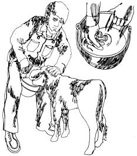
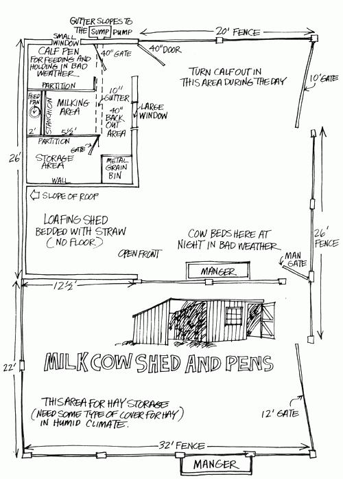

Back when the white man was "conquering" the North American wilderness, the first amenity added to the newly cleared land was often a milk cow. This was a giant step toward self-sufficiency and it's a telling commentary on the state of American agriculture that there are no milk cows at all on seven out of ten U.S. farms today.
Considering that one or two of the remaining three farms are commercial dairies, the family milk cow would appear to be practically a thing of the past. It's even possible to go one step farther and say that the self-sufficient family farm has nearly disappeared from the American scene right along with the one-cow family and the pool of cow-care knowledge that every small farming community once had.
It's ironic, I suppose, that bedrock information on keeping a family cow should be increasingly hard to come by now that so many young folks are eager to add a milk producer to their new homesteads. The modern dairy industry's methods, equipment, research data-even the animals themselves-are geared toward mass production and seldom fit the needs of the one-cow family.
True, a really dedicated modern homesteader can dig out the excellent extension service publications of the 1930's . . . and much of the timeless down-to-earth data from those booklets is summarized in the article "A Family Cow" on pages 58-59 of MOTHER NO. 2. Get that issue of this magazine and read it as I won't repeat the information (benefits, economic analysis, breed comparisons, etc.) here. Rather, I'll pick up where that guide leaves off, try to point out problems of cowkeeping today which were not appreciable a generation ago . . . and suggest ways around them.
One of the principle (but seldom mentioned) hangups faced by today's family farmers is that very few of the interested young adults moving "back" to the land from the cities have ever dealt with a cow before. On the other hand, the youngsters who have grown up in agriculture and are still in the business are, by necessity, so commercially oriented that they're either full-time dairymen or have long-sold the farm cow and get their milk from a carton. In other words, the old reservoir of "word of mouth" family cow lore-which even the 1930 manuals assumed that everyone already knew-has dried up.
So the primary bind a beginning cowkeeper working "by the book" encounters is that the first chapter has been omitted from the old literature and the first ten chapters-how to squeeze, how to make Bossy stand still while the squeezing is going on, that sort of thing-are missing today. A man can't learn to run if he doesn't know how to walk . . . or milk a cow if he doesn't know why and how to keep one.
To begin at the beginning then, the advantages of owning a milk cow are many and you wouldn't even be reading this you weren't aware of some of them. Still, you won't appreciate ciate the full spectrum of bovine bounty until you have a cow of your own.
In addition to a more or less regular supply of fresh milk family cow can provide the back-to-the-land homestead with an almost endless variety of ice cream, cottage cheese, honest butter (which replaces a lot of cooking shortening and the more inexpensive spread"), yogurt, unlimited whipped cream and other easily made by-products. The skim milk left over from the "manufacture" of many of these delectable itemexcellent chicken and hog feed. It's also an ideal supplemment to the diet of one or more farmstead cats (which most knowledgeable country folk prefer over expensive and undesirable varmint poisons).
The chain goes on and on and-on our Montana homestead-we've found that we're practically married to our cow. About the time the milking gets to be a real chore, it's time to dry Ole Yeller up. We glory in our new-found freedom from dairy duties for a few days . . . until the butter and the cream and the milk runs out. Then, after several weeks of enforced belt-tightening-when we're literally drooling for all those terfat by-products-we're ready to grab the milk stool and run for the barn just as soon as Ole Yeller's new calf gives forth his first bawl.
That cow's influence on our total life is so all-pervad that it defies modern enterprise accounting. Depending on mood, breadth of mind and the scope of operations consider: 1 can "prove" that Ole Yeller is a losing proposition . . . an can also prove that she's our greatest asset. Either way, thou I can honestly say that the cow-aided and abetted by r chickens and garden (all intimately interrelated)-keeps us au from the grocery store except for very infrequent safaris. 7 one factor-regardless of other economic considerations-jil fies keeping Yeller on the place . . . but that's the subject another article.
A word of warning: once you start milking a good cow for a single family as we do, you will be almost certain to accumulate a surplus of milk and cream during some seasons of the year. When this happens, all the neighbors will probably beat a path to your door . . . which can work out advantageously on a barter basis if they pick up your excess production at your place. Just don't be tempted to peddle your (Bossy's) wares or expand the operation into a minor dairy. It's impossible for the one-cow operation to economically comply with the strict dairy laws already on the books. Separating cream and selling it for manufacturing purposes was a possible source of homestead income in the past . . . but regulations are being tightened in this field also. It's best to completely rule out the possibility of cash compensation for your cow's production and concentrate on trading that milk and cream for your neighbors' farmstead surplus, instead.
You'll want to think about two aspects of owning a cow before buying one. The first is your physical facilities. If you don't have at least two acres of good pasture land in humid or irrigated country, I'd forget it. A cow will do fine in dry lot (confined off pasture and able to eat only what you bring her), but the logistics of providing a balanced diet for one animal get pretty thin. You'll need to be fairly close to a source of 2 1/2 or 3 tons of hay and a ton of grain . . . and have a place to store that much feed. Milking facilities can be pretty primitive . . . some oldtimers just threw a rope around Bossy's horns, anchored her to a post and milked in the field. In a relatively confined area, though, the relation of hay and grain storage to the milking area to the manure-handling facilities to the pasture is mighty important.
The second consideration to bear in mind when buying a cow is your own mental makeup. You must have a sensitivity for animals and be able to identify with them to the point that you can feel their needs.
Then again, you can't be too soft-hearted or old Bossy will wind up owning you. There's that cute little calf (usually the difference between profit and loss for the year) that you've got to be tough enough to sell annually . . . and the fall will come when Bossy herself is too stiff and sore and short of teeth to make it through the winter. When that happens you'll have to load her up and take her to market too. The $200 she'll bring at that time is an important part of her total production, and may be needed to replace her. Moreover, some areas don't have rendering works (most now charge for pickups anyway) . . . and imagine the size hole (usually chipped through frozen ground) it takes to plant a cow! As a clincher, it's downright ecologically immoral not to keep that 2/3-ton of meat in the food cycle.
You must really want to learn animal husbandry when you keep a single cow because, to do right by her, you'll need to know almost as much as if you were caring for a hundred. If you can't look upon the necessary learning process as a form of recreation, your time won't be worth much to you.
Remember, too, that a homestead cow will demand your attention twice a day for 90% of the year. The whole family must be willing to milk on occasion . . . and a good neighbor who'll sometimes handle the chores in exchange for some of the produce can be a big help in relieving the monotony of the whole situation.
On the other hand, it's more important to retain your sanity and flexibility than to be as religious in the 12-and-12-hour habits of milking as the commercial dairyman down the road or those early extension circulars make out. Sure, a cow is a creature of habit, and you'll get a little more production out of yours if you milk her "by the book" . . . but even the experts now agree that a cow's output won't drop off that much if you milk her on, say, a 10-and-14 schedule (7 AM and 5 PM, for instance). We try to milk at the same time each day, all else being equal, but we don't rush home from a visit to town or deny ourselves an extra hour of sleep when it's needed. If a man's going to let his cow set his schedule, he might as well go to dairying professionally.
My list of cowkeeping gear includes a milk stool, pitch fork, manure fork, hay bale hook and wheelbarrow at the barn. A milk pail, small bucket and rags for,washing Ole Yeller's bag before milking, large coffee cans for storing dairy produce and a strainer makeup my milking equipment. The only expendable supplies are milk filter discs for the strainer.
Old hand-crank separators are practically given away at farm sales in our area and used table-top electric models run about $25. If you don't want to fool with a separator, you can skim the cream off your chilled surplus milk . . . but in that case, you might want to consider a small used refrigerator (or a good springhouse or box) in which the milk can be stored until the cream rises.
The agri-parasites in town will sell you hundreds of dollars worth of livestock veterinary gear if you let them but-unless you neighbor with a vet (in which case you won't need to stock anything)-I suggest having on hand only:
1 Rubber stomach tube and a gallon of mineral oil
1 Intravenous injection kit and a quart of electrolyte solution
1 Balling gun with a dose of sulfa boluses and a rumen magnet
1 Syringe (10 cc), a minimum quantity of a broad spectrum antibiotic and 10 cc of Epinephrine
1 Obstetrical chain (60") with hand hook, green soap or slippery calving disinfectant and a block and tackle fence stretcher
1 Can of powdered calf scour medicine with a table spoon measure
1 Castrating knife with sulfa powder and Lysol disin fectant
1 Can of dairy insect powder
1 Curry comb
1 Rope and/or rope halter
These items are all relatively inexpensive and, except for some of the antibiotics, have excellent shelf life. If you don't understand their application, most any neighbor with livestock experience can help you learn to use this equipment and medicine effectively. The O.M. Franklin Serum Company, Box 6838 Stockyard Station, Denver, Colorado and Charles Pfizer & Company, Inc., Agricultural Division, 502 Fountain Parkway, Grand Prairie, Texas publish excellent catalogs (as do other veterinary supply companies) that demonstrate the use of their medications and equipment.
If you're feeding 10 or 12 kids and need all the whole milk you can get, buy a Holstein. Holsteins are considerably larger than other dairy cattle and their milk contains less butterfat... but they do give a lot of that milk and their calves generally sell better than the calves of other dairy breeds.
Most of us, though, have smaller tribes than mentioned above and can see a surplus of milk in the cards on any deal concerning a family cow. That probably means that a Guernsey Jersey is called for. The cream on their milk is worth as much as the whole milk itself. Cream is also much more compact to store and stays fresh longer so, from a strictly dairy products standpoint, a small farm household will usually do better with one of the latter two breeds.
If you're just starting out in the cow business, try to buy a middle-aged bovine lady that has always been a family milk source. Such an animal-six or eight years old with a consistent calving record-will provide you with three to six more years of milk and calf production with a minimum of problems. If possible, get this ideal homestead cow while she's carrying a calf-so you don't have to worry about getting her bred right off-and she'll teach you the business as you go along.
Forget the idea of picking up a "bargain" animal from a commercial dairy. Some of those cattle have never been touched by human hands and can be considerably less than you'll want in the way of disposition. They also can have breeding or other problems that have been covered up by intensive veterinary attention and are often not the "good buys" they seem to be.
It'll help if you can milk your homestead's new darling once with the previous owner . . . or at least get an idea of the amount the cow produces at each session with the bucket and stool. I'm not going to figure that you'll get even that much help, though. Instead, I'll assume you're plumb green and start with the most basic nuts and bolts of milking.
If you buy a gentle old family cow, as I've suggested, the actual milking really won't be difficult at all. It will be tiring and time-consuming at the outset and the muscles in your hat and forearms will knot up and tucker out and make you want to weep. You'll feel like cramming this whole magazine down my craw long before you finish that first milking . . . but have faith and patience. Those muscles will shape up quickly and you'll soon turn into a fearsome arm wrestler with a bone-crushing handshake. You'll also soon be short of friends if you persist in demonstrating your new strength.
With a placid well-experienced "queen of the barn", you'll be able to take a good seat on a comfortable stool (about inches high) on her right side with no thoughts about remaining poised for a rapid retreat at any instant. The calmer the cow, in other words, the more completely you can concentrate on the actual act of milking.
A modest understanding of physiology will help you in your first attempt at getting Bossy's bounty out of her udder into the pail. Rather than being a basketball with faucets, cow's bag-or udder-is a complex system of glands which milk into a labyrinth of voids that are gathered into "quarters" above each teat. Each quarter is relatively independent of the others and each can develop its own problems.
A series of sphincter muscles cuts off the flow of milk and through the teats and relaxation of these sphincters ("letting her milk down") is the key to an easy harvest of your cow's creamy white nourishment. And that's the whole theory behind the slogan about "contented cows" and the proven fact that dairy animals produce more when milking always follows the same, familiar, pleasing routine.
I'm sure that other ideas will work but, normally, a cow is put into a compliant mood by feeding her grain at every milking. Soon, she starts thinking about that good grain whenever she sees you approach the barn . . . and such soothing thoughts tend to cause the production of a hormone called oxytocin (honest) which starts to relax the sphincters. When Bossy finally gets her nose in the feed box she really starts hanging loose and her milk surges to the teats where it's as easy as it'll ever be to coax into the bucket.
Some cows don't remain in the proper mood for very long so you should start milking yours while she's still eating. Washing her teats with lukewarm water will also help Ole Bossy relax. As soon as she's as serene as possible (milk may actually squirt out of one or more teats in a thin stream), dry her bag and start filling your pail. The routine will soon become familiar and calming to both you and your bovine beauty.
Always remember, however, that anything out of the ordinary-strange surroundings, different people, unusual noises-can lead Bossy to produce adrenaline . . . which overrides oxytocin . . . and causes her (especially her udder sphincters) to tighten up and disrupt the whole process. Easy does it . . . with the same grain, gentle pats, smooth movements and lukewarm bag massage morning and night, day after day.
You can maximize your cow's long-term production each lactation period by always milking her (smoothly but) rapidly. The longer Bossy stands in the stanchion after finishing her grain, the more she starts to think about other things. This tends to dry up her oxytocin supply and cause her to retain some of her milk. . . and anything short of full production will, in turn, cause a cow to "dry off" and produce progressively less. Don't worry about this at the outset, though . . . a few days of slow, fumbling milking isn't going to cause your new pride and joy to go dry.
There are two schools of thought on the proper way to grasp and milk a cow: "thumbs-in" vs. "thumbs-out". I'm a thumbs-out man myself.
When milking thumbs-out, you grasp one of the cow's teats in each hand with your fingers all opposing your thumb and the base of your palm. The squeeze, as might be expected, starts at the top of the teat between the thumb and forefinger (to shut off any backflow). The middle finger closes against the base of the thumb next and, finally, the last two fingers are brought against the base of the palm. This should result in a solid jet of milk . . . that will land on your foot or the floor. Trial and error will direct the trajectory toward the pail, and you'll soon have the feel of things.
Practice with one hand at a time until you learn the trick of raising each teat slightly to let the reservoir fill before pulling firmly but gently downward as you squeeze with the proper rippling motion. As your coordination improves, try milking with both hands . . . then strive for the rhythm and speed that appears to produce maximum flow (this will vary for different people, depending on physical strength and sense of timing) . . . and you're in business.
The thumbs-in grip and squeeze are basically the same as those used for the thumbs-out method of milking . . . except for the fact that the thumb on each hand is bent at the joint and held "under" rather than around a teat. Some folks find this a more comfortable milking "hold" and still others prefer to "rest" by switching back and forth from one grip to the other while milking.
Whichever method you prefer, you should change quarters as Bossy's flow begins to weaken through the teats being milked. As you empty your cow's other two quarters, the voids above the first two teats will refill to some extent and you will soon learn to switch back and forth from one half of the bag to the other until you've nearly exhausted all four creamy fountains.
Slacken the pace of milking as Bossy's flow weakens. Then individually "strip" each teat by exaggerating the upward motion before every squeeze as you simultaneously massage that section of the bag with the other hand. You can ever final-strip (it's a combination stretch and traveling squeeze each teat from top to bottom several times with a thumb an forefinger. Some cows require considerable stripping, others parctically none.
Contrary to the extension service "rules", many family cows never dry up and don't seem to suffer for it . . . although I'm sure their total production is a little less than it would otherwise be and some folks claim that the calves from suet mothers are not as vigorous. When you buy a bred cow, then, you should learn her impending calving date so you'll know when to begin tapering off her flow of milk.
Start drying your cow approximately 60 days before she's due to calve. If you milk with your shoulder against Bossy's right flank, you may even receive a reminder about that time (in the form of a short, sharp kick) from the coming baby.
Vets have varying ideas about how to slacken a cow's milk flow but (especially with a high-production animal) I prefer to do it gently. At the outset, stop stripping ole Bossy and start cutting down on her grain. Within fifteen days you can probably drop your milking schedule from twice to once-a-day. Ten days later you can hold your expectant mama off pasture and put her on dry feed with limited water and no grain . . . and shortly after that, just stop milking.
This gives the cow a 30-day dry period, which is a good compromise between family needs and optimum commercial dairy conditions. Drying a cow completely only one month before calving has another advantage: if she should abort early and not freshen normally, you can often continue milking her for some time and, thus, not lose a full year's production.
The gestation period for cattle is 283 days-give or take a week-and a surprising number will be right on the money. My limited experience indicates that you should figure on at least a week longer if your cow has been bred to a bull of one of the large exotic breeds. Logic says the bull shouldn't have a dang thing to do with the length of time a cow carries her calf . . . but my observations are beginning to receive considerable confirmation.
Dairy cattle have few calving problems, both because the cows have ample pelvises and the calves are long and stringy. With luck, all you'll ever do while Bossy delivers is worry a lot. Odds are that you'll see many normal presentations before you encounter a problem . . . and that's far and away the best education to prepare you for seeking help when and if the need arises.
If you're inexperienced and suspect that your cow is having delivery troubles, find an experienced hand or call the vet. Most improper presentations can be solved by repositioning the calf and-when the new arrival is too large or the cow's labor insufficient-the calf may have to be extracted. Such an extraction may usually be accomplished in well-developed dairy cattle with the obstetrical chain and hand hook mentioned earlier. A really difficult birth may even call for hooking a fence stretcher (which generally works quite as well as an expensive "puller") between the obstetrical chain and a solid post or stall.
With most-but not all-dairy cows, you'll receive a warning several hours before the mother actually gives birth. The first change (which may occur a half-day prior to calving and which can be difficult to see) will be a rather sudden loss of "spring" in the cow's flanks as the calf moves up into delivery position. At the same time, the muscles near the mother's tail head will relax and noticeably "fall away" from the hip bones.
The cow will then commonly alter her normal activities two to six hours before the calf is born. If you have other cattle, she may turn antisocial and leave them. She might walk around nervously with a big figure "8" in her tail . . . or lick her flanks . . . or just crank her tail way off to one side.
These observations are of value primarily in bad weather when you'll want to stable the expectant mother before she delivers so that the new, wet baby will be protected from cold, wind and storms. If you do miss the signs of an approaching birth, though, it's comforting to know that a fresh dairy calf is remarkably resilient and that a mother cow will usually do her best to deliver the baby in a sheltered area.
The period of labor can vary greatly but I have yet to see a mature dairy cow go over four hours under normal circumstances. Generally, a water bag will appear (and burst), then the front feet (usually in a smaller sack) followed by the baby's nose above and between the legs.
Once you can see the calf's two feet, soles down, you are practically assured of a normal presentation. The greatest breadth of the baby's head is passing as its eyes come into view and, after that, there is little to worry about. At that moment, a cow which has been lying down will commonly stand up and let the calf fall to the ground. It looks horrible, but serves as artificial respiration to inflate the baby's lungs for their first gasp.
As soon as the calf hits the ground, most mother cows let out a bawl that sounds like a cross between a gentle low and a cry of surprise . . . and swap ends to claim the new baby. You'll only hear this sound once a year, so keep your ear-flaps open.
Ole Bossy will be quite rough with the fresh calf and will knock it around with her head as she cleans the membranes off its body with her tongue. That's quite natural and, again, serves to help the baby clear its air passages.
I've occasionally seen a persistent membrane remain wrapped over a calf's head long enough to suffocate it. If you think this is happening, I'd sure jump in and remove the tissue by hand. Then too, a fresh baby will sometimes lie very still with seemingly clogged air passages. When that occurs, try tickling the inside of the calf's nostril with a straw to cause a sneeze. Remember, that baby must start to breathe immediately.
Don't go into shock when you see the cow eat the afterbirth, either. The action is an entirely normal function and a sanitary necessity.
You may want to treat the new calf's navel stub with iodine before leaving him with his mother to give him some time to get on his feet and fill his belly. The cow will give very little milk for the first twelve hours and it doesn't hurt to leave her with the new arrival for that period of time. Once you take the calf away, though, never let it suck its mother again. Some cows can and will hold most or all of their milk for the baby . . . which will frustrate you and cause the calf to scour. (See the pen arrangement diagram for an idea of how to handle this problem.)
The "first milk" is not really milk at all but colostrum, a nutrient that contains powerful natural antibiotics. It's a necessity for freshborn calves (and is also fine for hogs or chickens) but undesirable for humans. Give Bossy's baby only 1 1/2 quarts from each of the first six milkings (three days) and discard the rest.
You'll go through a lot of patience and spilled milk the first couple of go-rounds, but the calf will quickly learn to drink from a bucket (lead it in by letting it suck your milk-wet fingers) or from a nipple on a nursing pail. After a few (extremely) frustrating, head butting, milk splashing feedings . . . you'll be in business.
I've seldom raised a bucket calf that hasn't developed a mild case of "milk scours" during its first month. Signs are droopy ears, loss of appetite and violent, foul-smelling diarrhea with a stool that is light brown in color. (Similar symptoms, but with white and/or bloody foaming stools could indicate infectious scours and require immediate veterinary care. Infectious scours, however, should be rare in a family cow operation.)
Milk scours are not serious when treated quickly. Your baby's stomach is just upset or he's somehow sneaked in and sucked the cow or you've increased his milk ration too fast. Slack off on the milk and give him a tablespoon of a good scour medicine at each feeding until he straightens out. The calf's appetite should be back in a day or two.
Commercial dairymen waste none of their cows' precious milk after the colostrum is gone, but feed their baby calves a powdered "milk replacer" for the first several months. I give Old Yeller's children whole milk, and slowly increase their ration from 1 1/2 to 3 quarts morning and night. After a month I start putting water, hay and grain in front of each calf andby the time the youngsters are 45 to 60 days old-the individual babies supplement their milk with solid feed and grow like lil·e weeds.
As soon as a calf begins to eat hay and grain steadily I a generally switch part of his ration from whole to skim milk. At the same time, the baby is dehorned, vaccinated for blackleg and malignant edema (10 cents for a do-it-yourself combination vaccine) and-if male-castrated. He should be vaccinated again for BLME at six months of age.
Wean the baby at the end of six or seven months when his mother's milk production begins to fall off. It's expensive to keep a large calf on dry feed and I've found it darn near impossible to turn one out to pasture with a lactating cow (despite the impressive array of junk "weaners" that decorate my milkhouse wall). Because of this weaning problem and a thing I've got about eating my own kids, I sell my calves when they're seven months old (an age that is highly merchantable) . . . and buy half a beef with the income.
A fresh cow's bag and teats are usually distended, swollen, red and hard. When you begin milking your new mama, then, she's probably going to find the operation painful and she may be tempted to kick or stick her foot in the bucket. Be prepared. You won't be able to extract much milk and relieve Bossy's discomfort the first couple of milkings but do the best you can. By the third or fourth session your cow's flow and quantity should be within reason.
If Bossy's teats tend to dry and crack or get sunburned (as commonly occurs shortly after calving), treat her with a good salve such as Corona or Bag Balm. Even long after calving or when dry, a cow can cut and scratch her bag on brush or wire fences. Get used to the way yours stands in stanchion and anytime she holds herself differently, lashes her tail, jumps or kicks during milking, inspect her teats and bag immediately. Use your salve liberally at the first sign of cuts, scratches, drying or cracking.
Bossy's milk production will increase steadily, probably peak after she's been fresh for about two months and then continue at a high level through the seventh month of lactation. Lush pasture will strengthen her flow noticeably (the first green grass in spring and wild onions almost any time of the year will also noticeably change the taste of her milk . . . for the worse) and extreme heat or cold will cut your cow's production.
Commercial dairymen generally "challenge feed" grain to their cows. That is, they keep increasing each animal's ration until her production stops increasing. Me . . . I just feed Ole Yeller a three-pound coffee can of grain (I use rolled barley but oats are good too . . . as are mixtures which include ground corn, wheat, etc.). I feed the same three-pound canful (with a little extra thrown in during below-zero weather) until I'm ready to start drying Yeller up.
A dairy cow needs all the feed she'll eat but, then again, cattle can waste a great deal when they're overfed. I used to worry a lot about just how much was enough and the extension bulletins only confused me. Gradually, though, Ole Yeller and her predecessors have taught me that an average milk cow will take care of herself on good pasture and still scoff up that three pounds of grain at each milking. If the pasture's short or snowed under, she needs 35 pounds of high-legume hay a day. When my hay is short on legumes and long on grass, I buy a sack of 33% protein dairy concentrate and mix one part with every 8 or 10 parts of the grain I feed while milking.
In many areas, cows need some sort of mineral supplement. This mineral is available in a block form that resists weather fairly well and your county agent can tell you what formulation-if any-is best for your region.
Salt should be available, free choice, to your cow at all times and it should be confined in some way so that she can E roll the block all over the pasture and kill the grass. Your equivalent of Ole Yeller should also have access to all the water she can drink (the quantity will impress you if you try hauling it by hand) and she'll do better by you in the winter if that is warmed to a temperature a little above freezing.
Just about the time Bossy has settled back into her normal routine after calving and you get to feeling comfortable with your daily cow-human relationship . . . you'll encounter a new situation. Approximately 30 to 45 days after presenting her baby to your homestead, the cow will start pacing the pasture, bawling, wringing her tail and sagging in the loins. She ma, refuse to come in at milking time, her production might fall by a third or a half . . . and she may not even let a drop down all for one milking.
Bossy's personality change will be unbelievable. If other cattle are in the pasture, they'll try to ride her and-for a period of from six to ten hours-she'll let them. (Never at any other time will she permit this, even if she does a little riding herself.
Bossy, in short, is bulling. She'll be back to normal in half a day but mark this date on your calendar and mark it well. Twenty-one days (18 to 23) later, she'll be this way again and you'll probably want to get her bred at that time. A good rude of thumb is to breed a cow on her second solid heat period, if it falls at least 50 days after calving. This gives you two chances at getting her bred to calve within a year of her last freshening.
Now pay close attention, because this is where the normal "amateur" milk cow operation gets messed up. Like calving, breeding is not an operation that can be put off. A cow is regular in everything she does and failure to breed yours on an annual schedule can cost your homestead many dollars. Both the calf and the milk you expect your Bossy to produce are important economic factors on a small farm. If the cow freshens only once every 18 months, your loss is appreciable. Drop whatever you're doing when Bossy comes into that second heat and get her bred!
In the early days (and right now, in some communities) a family cow in heat was taken to visit a neighbor's bull. Artificial insemination (it's safer and the inseminator will usually come to you), however, is now available in most areas.
An inseminator's technique varies somewhat from that of a bull and allows you more leeway in servicing your cow. As long as you get her bred within 12 hours of the time that she is definitely in standing heat, the artificial insemination should take just fine. It's easiest, of course, to determine standing heat (when your cow will allow herself to be ridden) if other cattle are present. If Bossy is the only cow you have, the milking she comes up the shortest will probably be your best indicator. Being in heat is really traumatic for most cows and you'll usually dang-well know when it's taking place. The inseminator can help you learn how to detect the tough ones.
Unless you're trying to raise a replacement heifer (which has its drawbacks), have the agent service Bossy with semen from a bull of one of the beef breeds . . . the calf will be "chunkier" and worth more for feeding purposes. Insemination commonly costs $12.00 and the fee includes a second service, if required. Once she's settled, your cow will be her same sweet self again for nine more months.
Without presuming to invade the professional veterinary, field, let me briefly discuss some of the common cow problems you may encounter and which you can often solve by administering your own "first aid".
BLOAT. If your pastures contain a high percentage of legumes, your cow may frequently become bloated . . . especially if she eats those legumes when they're wet or frosted. The ailment is caused by gasses that form in the rumen which extends high up in front of a cow's left hip. The obvious symptom is distention (often above backbone level) of an affected animal's left side. A bloated cow will be off her feed, in pain and either listless or down. Mild bloat is not particularly dangerous to a cow but extreme cases can kill any animal rather quickly.
If a bloated cow can move, running her around the pasture may be all the treatment she'll need to effect a complete cure. The stomach tube will help relieve gas pressure and a gallon of mineral oil forced down Bossy may "break up the bubbles" of a medium bloating. More heroic treatment-(such as "sticking" or puncturing the animal's paunch) used as a last resort to save a severely distended and down cow-is best left to a vet.
HARDWARE DISEASE is common in junky areas and means only that the old girl has swallowed a foreign objectusually metal-that is hung up somewhere in her digestive tract. Symptoms are pain and lack of appetite not accompanied by distention or other indications of disease.
Treatment consists of inserting a special "rumen magnet" down the sick Bossy's throat by means of a balling gun. The magnet will usually attract the offending object and immobilize it until both the magnet and attached offender can be pulled out. If that doesn't work, call the vet.
MILK FEVER is relatively common in very high-production dairy cattle but you may never see it at all in a general-run homestead cow. The ailment occurs when milk first starts to flow in a freshening cow and is the result of her body "donating" more calcium to the calf and the milk than it can spare. An afflicted animal will sicken rapidly and go down. Her eyes will flicker and her head will turn back. Death is imminent if the cow is not treated quickly.
Immediate intravenous administration of an electrolyte solution containing calcium-properly done-will bring a spectacular recovery from milk fever. I know of several farmers, equipped with the proper gear, who've saved cows down with this disease when storms or distance prevented the arrival of a vet. The injection is touchy, though, and rate of administration is critical . . . so get professional help if at all possible.
A cow with a history of milk fever is a likely repeater. Watch such an animal carefully at each calving.
KETOSIS, or false milk fever, has identical symptoms and-fortunately-is treated the same way. The ailment results from a lack of sugars and usually occurs during the first week or two of lactation. The electrolyte solution replaces the missing sugars and supplemental sugar-such as Karo syrup-should be mixed with the cow's grain for several weeks thereafter. Diagnosis is obviously important, so get professional help as soon as possible after you get, the cow back on her feet.
MASTITIS -signaled by bloody, clotted or ropy milk-is a nagging problem for dairymen everywhere. The best advice is to avoid it. Try to get a "clean" cow with a well-attached-not pendulous-bag and take good care of her udder (don't, for instance, let her fight with another cow). If your animal has a history of mastitis, a veterinarian can give you a treatment to infuse into each teat at the time you turn the old girl dry. The medication will ward off many potential problems when the cow again freshens.
Your one-animal dairy should never be bothered by SERIOUS INFECTIONS or RESPIRATORY DISEASES. . . but if she is and a vet can't get to her, a dose of sulfa boluses or an injection of antibiotics might be called for. If you take either measure, read all appropriate labels carefully. Milk generally must be discarded for a specified period of time after the use of antibiotics.
If your cow has a REACTION to any of the medicines mentioned above, Epinephrine has an indefinite shelf life and is prescribed as an antidote for most allergenic reactions. It's inexpensive and good insurance.
Two more diseases, rarely encountered in family cows but hazardous because they can be transmitted to humans, are BRUCELLOSIS (UNDULANT FEVER) and TUBERCULOSIS Replacement heifers should be vaccinated for brucellosis between the ages of two and eight months. They are commonly tattooed in the right ear when this is done, although the tattoo may become illegible. Find out whether the cow you buy has received this vaccination (if the tattoo is gone, the owner showed still have a certificate from the vet). Inexpensive tests f: both brucellosis and tuberculosis should be performed by . vet annually and results read differently for vaccinated and non-vaccinated animals.
I know this sounds like a menacing array of hazards but the chances are that you'll seldom-if ever-encounter any of the problems with a single, well-adjusted family cow. It's just be that you be prepared beforehand for what might happen.
Although insecticides have been "standard equipment" dairies for years, our notions about acceptable products in this field are now changing quite rapidly. Still, every cowman knows that insects can cut a wide swath into production during c-. tain seasons in fly country. So, rather than spray Ole Yeller indiscriminately twice daily, I now sprinkle ticide down her backline every couple of weeks.
I've herded as many as 1,400 range cattle at a time along the a rocky trail to our present homestead and I've also taken a few courses in animal husbandry, mammalogy and comparative anatomy. But for practical down-to-earth savvy of what hangs where in the old girl and how she operates, I'd like to recommend a clanged ole plastic model the kids and I put together few winters ago. It's called The Visible Cow and is made Renwall Products, Inc. The hide, organs and bones can disassembled and a concise manual on anatomy and physiology is included. Good winter sport.
Your relationship with your milk cow will prove a unique experience. Her mere presence demands your attention twice daily most of the year, in sickness or in health, regardless weather or moods (yours or hers). No other livestock or pet-even member of your family-will rate this level of schedule homage.
If you're sensitive enough to get along with a family cow the first place, you'll come to know her intimately. You'll rely upon her being in a certain place at a certain time and you'll react in a predictable manner. You'll also be infinitely exasperated when (and that's predictable too) she occasionally crosses you up. On the latter occasions, please try to remember that the ornery, * % ! # old renegade is really lovable Bossy 99% the time.
|
 |
 |
|